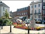
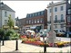

Home
The Holiday Lets
Location
Booking & Guest Book
Tourist Information
Useful Information
Links of Interest
Events in 2010 <
Contact Us


 

{kind=link}


Events in 2010
March:
- 7 Grizzly Run, Seaton
- 14 Seaton Tramway - Mother's Day - Mum travels FREE today
April:
- 4 Seaton Tramway - Easter Egg Hunt at Colyton Station
- 10 -15 Lyme Regis Operatic Society
- 23 Seaton Tramway - St Georges Day
- 30- 2 May Lyme Regis Fossil Festival
May:
- 20 - 22 Devon County Show, Westpoint Exeter
- 30 Pecorama Annual Vintage/Classic Vehicle Rally
June :
- 5 Seaton Tramway 40th Anniversary Celebrations
- 5 Colyton Christmas Fayre (in association with Seaton Tramway)
- Live outdoor Anniversary Concert Spectaular
- 6 Seaton Tramway Classic Car Show - 40th Anniversary
- 6 Pecorama - Thomas II and Friends:
- Celebrating our oldest engine's birthday.
- 13 Coast to Coast Motorcycle Run - Lyme Regis-Weston-super-Mare
- 13 Pecorama Miniature Traction - Engines on display and in steam
- 20 Pecorama Father's Day - free entry for Dads accompanied by one or more children.
- 20 Seaton Tramway - Father's Day - Dad travels FREE today.
- 20 Seaton Tramway - A treat for Dad - a Tram Driving Experience for
- £20.00. Pre-book or turn up on the day.
- 26 - 27 Axminster Festival of Gardening & Craft
- 27 Great West Classic Car Run to Pecorama
July:
- Every Tuesday Lyme Regis Town Band Music by the sea
- Marine Parade 8pm
- 3 -5 Lyme Regis Jazz Festival
- 11 - 14 Pecorama Teddy Mac Days - with colouring competitions, quizzes, story reading and book signing
- 12 - 16 Peco Playgroups Week - children's entertainment daily, plus all the Peco loco's in action
- 15 - 16 Pecorama Thomas Story Days -story reading and book signing
- 17 Uplyme & Lyme Regis Horticulture Show Uplyme Cricket Field
- 18 Peco Open Garden Day for Charity - FREE ENTRY to the Gardens and Model Railway Exhibition
- 24 -31 Lyme Regis Life Boat Week
- 25 Branscombe Air Day
- 27 - 14 Aug Pecorama Kit Construction Days:
- Personal tuition in kit building
- 28 Annual Sir George Somers Civic Parade
- 30 - 6 Aug Sidmouth Folk Festival Week
- 31 Axmouth Show
August:
- Every Tuesday - Lyme Regis Town Band Music by the sea.
- Marine Parade 8pm
- 7 - 15 Lyme Regis Regatta & Carnival
- 7 - 13 Marine Week Charmouth Heritage Coast Centre
- 12 Beer Regatta Day
- 21 Dalwood Fair
- 24 - 28 Peco Loco Week - intensive train service operated by the entire Peco fleet, plus guest locomotives.
- 28 - 4 Sep Seaton Carnival Week
- 29 - 30 Honiton Hill Rally
- 29 - 30 Pecorama Bank Holiday Railway Gala - Guest loco's and the entire Peco fleet in operation, plus entertainment in the Garden Theatre.
September:
- 4 Seaton Carnival Procession
- Every Tuesday - Lyme Regis Town Band Music by the sea.
- Marine Parade 8pm
- 11 Colyton Carnival Procession
- 18 Axminster Carnival Procession
- 25 Colyford Goose Fayre
- 25 Sidmouth Carnival Procession
- 25 - 3 Oct Lyme Regis Arts Festival (events around the town)
- 27- Oct 23 Pecorama FREE ENTRY to the Gardens - pay only for rides on the railway and entry to the Model Railway Exhibition.
- Special autumn dishes in the Garden Room Restaurant.
October:
- 2 Newton Poppleford Carnival Procession
- 8 - 10 Beer Rhythm & Blues
- 9 Exmouth Carnival Procession
- 23 Honiton Carnival Procession
- 25 - 30 Pecorama Autumn Half Term Week: Ride the Beer Heights
- Frights Ghost Train for Hallowe'en.
- 30 Ottery St Mary Carnival Procession
- 30 Seaton Tramway - Ride the Halloween Tram of Terror if you DARE
December:
- 12,19, 23, 24 Seaton Tramway Santa Specials
- 7 Grizzly Run, Seaton
- 14 Seaton Tramway - Mother's Day - Mum travels FREE today
- 4 Seaton Tramway - Easter Egg Hunt at Colyton Station
- 10 -15 Lyme Regis Operatic Society
- 23 Seaton Tramway - St Georges Day
- 30- 2 May Lyme Regis Fossil Festival
- 20 - 22 Devon County Show, Westpoint Exeter
- 30 Pecorama Annual Vintage/Classic Vehicle Rally
- 5 Seaton Tramway 40th Anniversary Celebrations
- 5 Colyton Christmas Fayre (in association with Seaton Tramway)
- Live outdoor Anniversary Concert Spectaular
- 6 Seaton Tramway Classic Car Show - 40th Anniversary
- 6 Pecorama - Thomas II and Friends:
- Celebrating our oldest engine's birthday.
- 13 Coast to Coast Motorcycle Run - Lyme Regis-Weston-super-Mare
- 13 Pecorama Miniature Traction - Engines on display and in steam
- 20 Pecorama Father's Day - free entry for Dads accompanied by one or more children.
- 20 Seaton Tramway - Father's Day - Dad travels FREE today.
- 20 Seaton Tramway - A treat for Dad - a Tram Driving Experience for
- £20.00. Pre-book or turn up on the day.
- 26 - 27 Axminster Festival of Gardening & Craft
- 27 Great West Classic Car Run to Pecorama
- Every Tuesday Lyme Regis Town Band Music by the sea
- Marine Parade 8pm
- 3 -5 Lyme Regis Jazz Festival
- 11 - 14 Pecorama Teddy Mac Days - with colouring competitions, quizzes, story reading and book signing
- 12 - 16 Peco Playgroups Week - children's entertainment daily, plus all the Peco loco's in action
- 15 - 16 Pecorama Thomas Story Days -story reading and book signing
- 17 Uplyme & Lyme Regis Horticulture Show Uplyme Cricket Field
- 18 Peco Open Garden Day for Charity - FREE ENTRY to the Gardens and Model Railway Exhibition
- 24 -31 Lyme Regis Life Boat Week
- 25 Branscombe Air Day
- 27 - 14 Aug Pecorama Kit Construction Days:
- Personal tuition in kit building
- 28 Annual Sir George Somers Civic Parade
- 30 - 6 Aug Sidmouth Folk Festival Week
- 31 Axmouth Show
- Every Tuesday - Lyme Regis Town Band Music by the sea.
- Marine Parade 8pm
- 7 - 15 Lyme Regis Regatta & Carnival
- 7 - 13 Marine Week Charmouth Heritage Coast Centre
- 12 Beer Regatta Day
- 21 Dalwood Fair
- 24 - 28 Peco Loco Week - intensive train service operated by the entire Peco fleet, plus guest locomotives.
- 28 - 4 Sep Seaton Carnival Week
- 29 - 30 Honiton Hill Rally
- 29 - 30 Pecorama Bank Holiday Railway Gala - Guest loco's and the entire Peco fleet in operation, plus entertainment in the Garden Theatre.
- 4 Seaton Carnival Procession
- Every Tuesday - Lyme Regis Town Band Music by the sea.
- Marine Parade 8pm
- 11 Colyton Carnival Procession
- 18 Axminster Carnival Procession
- 25 Colyford Goose Fayre
- 25 Sidmouth Carnival Procession
- 25 - 3 Oct Lyme Regis Arts Festival (events around the town)
- 27- Oct 23 Pecorama FREE ENTRY to the Gardens - pay only for rides on the railway and entry to the Model Railway Exhibition.
- Special autumn dishes in the Garden Room Restaurant.
- 2 Newton Poppleford Carnival Procession
- 8 - 10 Beer Rhythm & Blues
- 9 Exmouth Carnival Procession
- 23 Honiton Carnival Procession
- 25 - 30 Pecorama Autumn Half Term Week: Ride the Beer Heights
- Frights Ghost Train for Hallowe'en.
- 30 Ottery St Mary Carnival Procession
- 30 Seaton Tramway - Ride the Halloween Tram of Terror if you DARE
- 12,19, 23, 24 Seaton Tramway Santa Specials
Hawley Farm, Dalwood, Axminster, Devon, EX13 7HR.
Tel: 01404 831250
Mob: 07968 155916